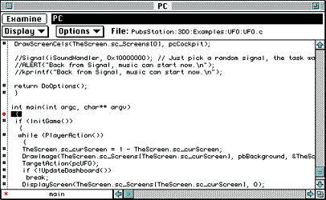
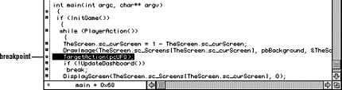
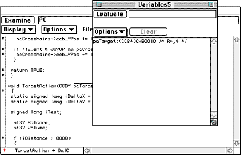
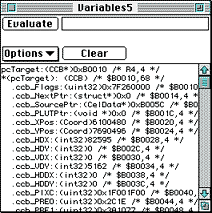
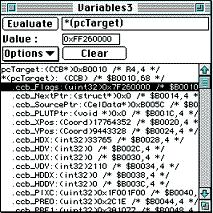

To look at your program in a Source window, follow these steps:
Make sure the files UFO (executable), UFO.sym (symbols
file), and UFO.spt (script file) are in the /remote folder.
Type into the Terminal window:
debug ufo
and press Enter.
The Debugger launches the program and stops at main().
Press Command-K to bring up a Source window (or choose New Window,
then Source from the View menu).
When you use debugprog_name to start a program
(as in Step 2), the Debugger always puts a breakpoint at
main(). In the Source window shown in the figure below, the
program is stopped at main().

Figure 1: Source window stopped at a breakpoint at main().
Press Command-G to release the program.
The startup screen should appear on the TV monitor after a short time.
In the Terminal window, watch the information about the program's
progress. When the text "DoOptions called" appears, press the Start button
on the control pad attached to the 3DO system to start the game.
If you know a program's flow, you can set a breakpoint in the Source
window to stop execution and examine the program.
In the Source window, click on the cross-hatch (#) next to the line
TargetAction(pcUFO)as shown in the figure below.
The cross-hatch changes to a red bullet.

Figure 2: Location for setting a breakpoint.
When the program reaches the breakpoint in the while loop the
next time, it stops. You can now examine the program by stepping through
it.
Use Command-, (comma)-Step Over-to move to
UpdateDashboard().
Use Command-; (semicolon)-Step In-to move to the first line of
UpdateDashboard().
Continue to examine the program for as long as you like.
To remove the breakpoint, click on it again and it changes back to the
cross-hatch.
Note: Step Over goes to the first executing instruction of a
function. Step In goes to the next executable line and makes it possible
to look at local variables and other function-internal information.
Usually, you use Step In only to look at a particular function in detail.
The 3DO Debugger lets you look at structures, evaluate variables, and
dereference pointers in the Variables window. You can also change the
value of a variable and see the effect of the change on your program.
Return to the main loop and press Command-, (Command-comma) to step
into the TargetAction() function.
With the PC (program counter) inside the TargetAction()
function, select pcTarget, then press Command-D to bring up a
Variables window.

Figure 3: Variables window invoked from a Source window.
Hold down the Command key and double-click on the structure in the
Variables window to expand it.

Figure 4: Structure displayed in a Variables window.
To interactively change variable values, click on the
ccb_Flags line to make it appear in the edit region.

Figure 5: Variable value selected for interactive change.
Change 7F26... to FF26..., then press the Return key.
To see the change take effect, look at the TV screen and watch the UFO
disappear as you press Command-G to release the breakpoint and continue
program execution.
If you want to change the value back, set a breakpoint elsewhere and
change the value, then release the breakpoint again.
To change the position of the UFO, double-click on the
ccb_XPOS line.
From the Options menu, select Frac16-16 to see the position's actual
value.
Figure 6: Display options pull-down menu in the Variables
window.
Change the value of the position in the ccb_XPOS line,
then press the Enter key.
Release the breakpoint by pressing Command-G to continue.